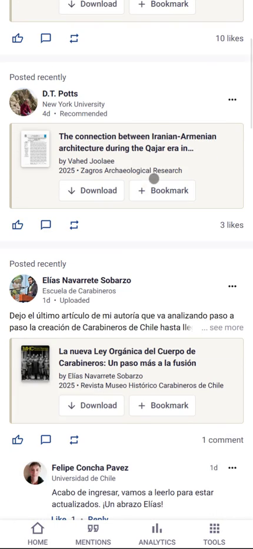
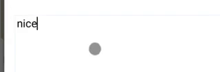
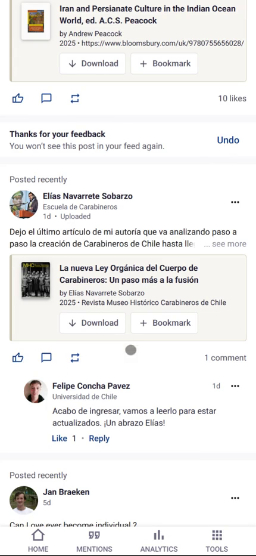

screenshot_0 · full
[430, 932] → [430, 932] · 保留像素 100.0% · 场景 0


坐标：[0, 0, 430, 932] · 原因：first_screenshot
算法版本：experimental_theme_aware_per_step_v2。仅用于预览，生成流程未修改。
返回任务总览 · 查看全部步骤拼图 · 查看算法判断 JSON
左侧为原图预览和选区（绿色：裁剪；蓝色：保留整图），右侧为此算法的输出预览；实验版尚未用于生成。点击图片查看原尺寸；预览自动缩放。像素减少比例不等于 token 减少比例。
[430, 932] → [430, 932] · 保留像素 100.0% · 场景 0
坐标：[0, 0, 430, 932] · 原因：first_screenshot
[430, 932] → [430, 932] · 保留像素 100.0% · 场景 0
算法输出预览

坐标：[0, 0, 430, 932] · 原因：changes_spread_keep_full
[430, 932] → [430, 932] · 保留像素 100.0% · 场景 0
坐标：[0, 0, 430, 932] · 原因：changes_spread_keep_full
[430, 932] → [430, 932] · 保留像素 100.0% · 场景 1
坐标：[0, 0, 430, 932] · 原因：large_visual_change
[430, 932] → [430, 932] · 保留像素 100.0% · 场景 2
坐标：[0, 0, 430, 932] · 原因：large_visual_change
[430, 932] → [321, 105] · 保留像素 8.4% · 场景 2
算法输出预览

坐标：[15, 80, 336, 185] · 原因：localized_change
[430, 932] → [430, 932] · 保留像素 100.0% · 场景 3
算法输出预览

坐标：[0, 0, 430, 932] · 原因：large_visual_change
[430, 932] → [430, 932] · 保留像素 100.0% · 场景 4
坐标：[0, 0, 430, 932] · 原因：large_visual_change
[430, 932] → [430, 932] · 保留像素 100.0% · 场景 5
坐标：[0, 0, 430, 932] · 原因：large_visual_change
[430, 932] → [430, 932] · 保留像素 100.0% · 场景 5
坐标：[0, 0, 430, 932] · 原因：changes_spread_keep_full